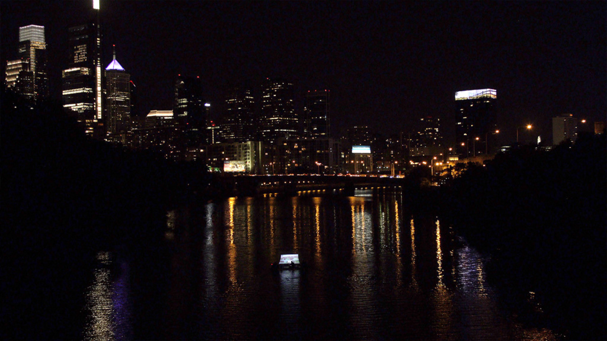
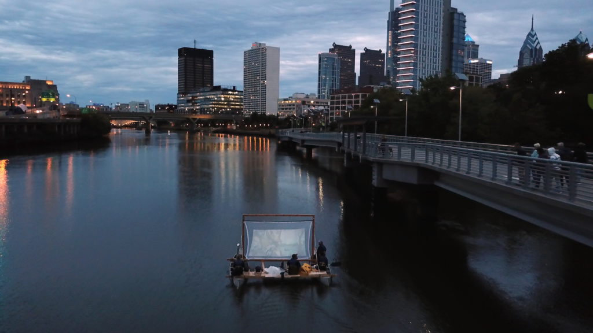
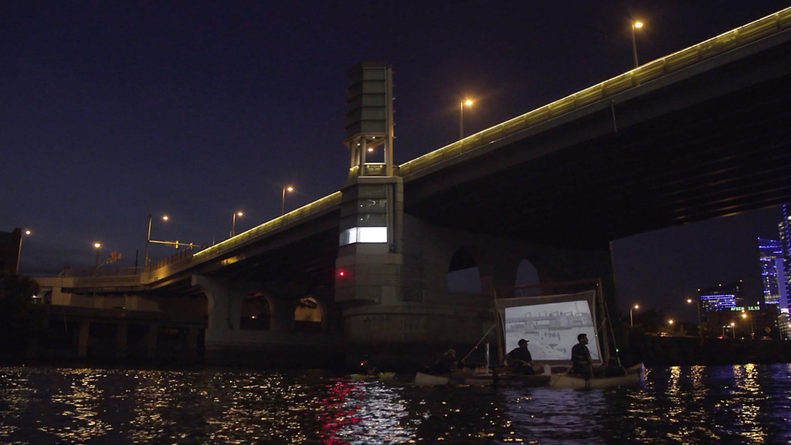

Floating Archives was a public artwork on the lower Schuylkill River in Philadelphia which took place in September, 2018. Hand-drawn animations based on archival photographs and etchings were projected from the floating platform to an attached screen to re-imagine the labor, leisure, and obscured histories of this waterway from 1800 to today. Specific animations were projected to an attached screen as it approached the location that each original image referenced to create a layering of landscape, history, and memory.
Floating Archives was performed on Saturday 15th and 22nd in September 2018 in collaboration with the Penn Program in the Environmental Humanities (PPEH), and supported by the Mellon Artist in Residence Program at PPEH.
Stills
View from the 38th street bridge
View from the MLK Bridge
View from the South Street Bridge
Passing under the South Street Bridge